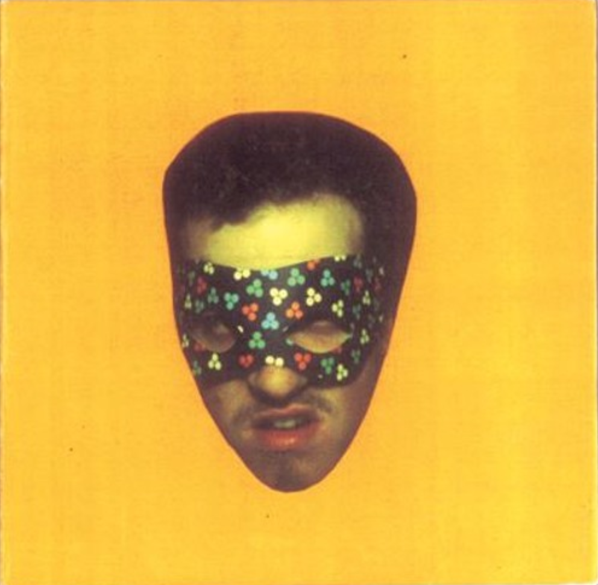

Frisk Frugt - Det store kødhoved (CD-R 2004)
1. Ensamble 4:12
2. Gravebells 1:46
3. Guitar 0:27
4. Stykke for banjo mm. 1:50
5. Det store kødhoved part 1 4:29
6. Dying / Being Born 6:24
7. Myretue 0:34
8. De rejsende i tid vs. the evil looptrops 2:48
9. Kitchen 0:30
10. Det store kødhoved part 2 11:07
11. The west 2:24
composed by Anders Lauge Meldgaard
